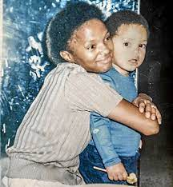

When Trevor was six years his mother started dating Abel. Abel was auto
mechanics, handsome and the world knew him as a good person but at home he
is toxic, he was born in Tzaneen. After sometimes Abel and Patricia
married and gave birth to their son Andrew. In the Tsonga culture where
Abel came from, they had a belief that men had to lead family and men are
the ones to instruct at home and women do housework that's what Abel also
want his wife Patricia to always stay home and do housework but Patricia
refused and this has made Abel bring new rules. This has made Trevor start
asking himself “why Abel has married his mother while he wanted a
traditional marriage and traditional women”. Abel wanted a free woman
because his dream is to put her in a cage”.Abel poor’s drinking habits
further create tension where he almost burns their house down. This had
made Patricia starts arguments and causing Abel to hit her twice. When
Patricia report the assaults to the officers and they refused to place a
charge.

Humor
Born crime is the most interesting book I have ever read, Trevor tends to
find humor in every situation like the time at school they used to beat
him but still, he is not crying he is laughing. He tends to speak about
the real world in his book like the time his mother bought for him Knock
off brand abidas and he starts telling her that the shoes are fake and his
mother told him that he should be grateful that he gets an extra one.
There is also another time where he pops in the kitchen and the
grand_mother starts think that there is something in the house until when
they came home and they started searching and they find the shits and they
thought it’s a demon and they started praying He also used humor when
there were men who wanted to steal him and he started talking to them in
the same language Trevor has used humor to find friends when he went to
school and he was able to speak multiple languages and from there he
started to get many friends This book has shown me the importance of
laughing and the way it can make you have most of the thing you wanted to
like the way Trevor has got friends